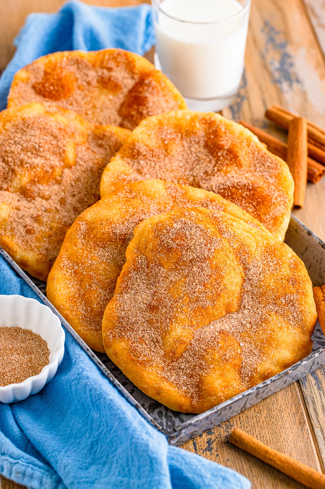

Eiki Furuya's Recipe Page.
Recipe Name
Recipe by: This Silly Girl's Kitchen — Elephant Ears Recipe
Ingredients
- Whole milk
- All-purpose flour
- Granulated sugar
- Baking powder
- Fine sea salt
- Unsalted butter
- Ground cinnamon
- Peanut oil for frying
Equipment
- Mixing bowl (for mixing the dough)
- Frying pan or deep pot (for frying in oil)
- Rolling pin (to roll the dough thin)
- Tongs or chopsticks (for turning and removing from hot oil)
- Paper towels (to drain excess oil)
Directions
- Combine dry ingredients in a mixing bowl.
- Cut in the unsalted butter until mixture resembles coarse crumbs.
- Add milk and mix until a soft dough forms.
- Roll out the dough and cut into desired shapes.
- Heat peanut oil to frying temperature and fry the dough until golden brown.
- Drain on paper towels, sprinkle with cinnamon sugar, and serve warm.
This page created as academic activity only.

Photo: This Silly Girl's Kitchen